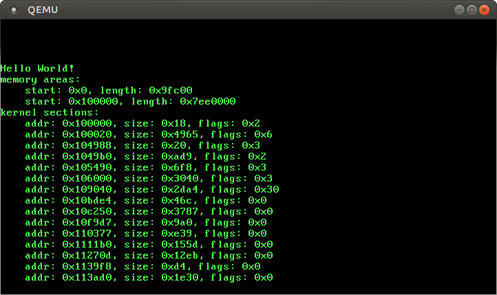

No longer updated! You are viewing the a post of the first edition of “Writing an OS in Rust”, which is no longer updated. You can find the second edition here.
In this post we create an allocator that provides free physical frames for a future paging module. To get the required information about available and used memory we use the Multiboot information structure. Additionally, we improve the panic handler to print the corresponding message and source line.
The full source code is available on GitHub. Feel free to open issues there if you have any problems or improvements. You can also leave a comment at the bottom.
When a Multiboot compliant bootloader loads a kernel, it passes a pointer to a boot information structure in the ebx register. We can use it to get information about available memory and loaded kernel sections.
First, we need to pass this pointer to our kernel as an argument to rust_main. To find out how arguments are passed to functions, we can look at the calling convention of Linux:
The first six integer or pointer arguments are passed in registers RDI, RSI, RDX, RCX, R8, and R9
So to pass the pointer to our kernel, we need to move it to rdi before calling the kernel. Since we’re not using the rdi/edi register in our bootstrap code, we can simply set the edi register right after booting (in boot.asm):
start:
mov esp, stack_top
mov edi, ebx ; Move Multiboot info pointer to edi
Instead of writing an own Multiboot module, we use the multiboot2 crate. It gives us some basic information about mapped kernel sections and available memory. I just wrote it for this blog post since I could not find any other Multiboot 2 crate. It’s still incomplete, but it does its job.
So let’s add a dependency on the git repository:
# in Cargo.toml
[dependencies]
...
multiboot2 = "0.1.0"
// in src/lib.rs
extern crate multiboot2;
Now we can use it to print available memory areas.
The boot information structure consists of various tags. See section 3.4 of the Multiboot specification (PDF) for a complete list. The memory map tag contains a list of all available RAM areas. Special areas such as the VGA text buffer at 0xb8000 are not available. Note that some of the available memory is already used by our kernel and by the multiboot information structure itself.
To print all available memory areas, we can use the multiboot2 crate in our rust_main as follows:
let boot_info = unsafe{ multiboot2::load(multiboot_information_address) };
let memory_map_tag = boot_info.memory_map_tag()
.expect("Memory map tag required");
println!("memory areas:");
for area in memory_map_tag.memory_areas() {
println!(" start: 0x{:x}, length: 0x{:x}",
area.base_addr, area.length);
}
The load function is unsafe because it relies on a valid address. Since the memory tag is not required by the Multiboot specification, the memory_map_tag() function returns an Option. The memory_areas() function returns the desired memory area iterator.
So we have one area from 0x0 to 0x9fc00, which is a bit below the 1MiB mark. The second, bigger area starts at 1MiB and contains the rest of available memory. The area from 0x9fc00 to 1MiB is not available since it contains for example the VGA text buffer at 0xb8000. This is the reason for putting our kernel at 1MiB and not somewhere below.
If you give QEMU more than 4GiB of memory by passing -m 5G, you get another unusable area below the 4GiB mark. This memory is normally mapped to some hardware devices. See the OSDev Wiki for more information.
We used expect in the code above, which will panic if there is no memory map tag. But our current panic handler just loops without printing any error message. Of course we could replace expect by a match, but we should fix the panic handler nonetheless:
To read and print the sections of our kernel ELF file, we can use the Elf-sections tag:
let elf_sections_tag = boot_info.elf_sections_tag()
.expect("Elf-sections tag required");
println!("kernel sections:");
for section in elf_sections_tag.sections() {
println!(" addr: 0x{:x}, size: 0x{:x}, flags: 0x{:x}",
section.addr, section.size, section.flags);
}
This should print out the start address and size of all kernel sections. If the section is writable, the 0x1 bit is set in flags. The 0x4 bit marks an executable section and the 0x2 bit indicates that the section was loaded in memory. For example, the .text section is executable but not writable and the .data section just the opposite.
But when we execute it, tons of really small sections are printed. We can use the objdump -h build/kernel-x86_64.bin command to list the sections with name. There seem to be over 200 sections and many of them start with .text.* or .data.rel.ro.local.*. This is because the Rust compiler puts e.g. each function in its own .text subsection. That way, unused functions are removed when the linker omits unused sections.
To merge these subsections, we need to update our linker script:
These lines are taken from the default linker script of ld, which can be obtained through ld ‑verbose. The .textoutput section contains now all .text.*input sections of the static library (and the same applies for the .rodata and .data.rel.ro sections).
Now there are only 12 sections left and we get a much more useful output:

If you like, you can compare this output to the objdump -h build/kernel-x86_64.bin output. You will see that the start addresses and sizes match exactly for each section. The sections with flags 0x0 are mostly debug sections, so they don’t need to be loaded. And the last few sections of the QEMU output aren’t in the objdump output because they are special sections such as string tables.
So the kernel starts at 1MiB (like expected) and is about 105 KiB in size. The multiboot information structure was placed at 0x11d400 by GRUB and needs 1480 bytes. Of course your numbers could be a bit different due to different versions of Rust or GRUB (or some differences in the source code).
When using paging, the physical memory is split into equally sized chunks (normally 4096 bytes) Such a chunk is called “physical page” or “frame”. These frames can be mapped to any virtual page through page tables. For more information about paging take a peek at the next post.
We will need a free frame in many cases. For example when want to increase the size of our future kernel heap. Or when we create a new page table. Or when we add a new kernel thread and thus need to allocate a new stack. So we need some kind of allocator that keeps track of physical frames and gives us a free one when needed.
There are various ways to write such a frame allocator:
We could create some kind of linked list from the free frames. For example, each frame could begin with a pointer to the next free frame. Since the frames are free, this would not overwrite any data. Our allocator would just save the head of the list and could easily allocate and deallocate frames by updating pointers. Unfortunately, this approach has a problem: It requires reading and writing these free frames. So we would need to map all physical frames to some virtual address, at least temporary. Another disadvantage is that we need to create this linked list at startup. That implies that we need to set over one million pointers at startup if the machine has 4GiB of RAM.
Another approach is to create some kind of data structure such as a bitmap or a stack to manage free frames. We could place it in the already identity mapped area right behind the kernel or multiboot structure. That way we would not need to (temporary) map each free frame. But it has the same problem of the slow initial creating/filling. In fact, we will use this approach in a future post to manage frames that are freed again. But for the initial management of free frames, we use a different method.
In the following, we will use Multiboot’s memory map directly. The idea is to maintain a simple counter that starts at frame 0 and is increased constantly. If the current frame is available (part of an available area in the memory map) and not used by the kernel or the multiboot structure (we know their start and end addresses), we know that it’s free and return it. Else, we increase the counter to the next possibly free frame. That way, we don’t need to create a data structure when booting and the physical frames can remain unmapped. The only problem is that we cannot reasonably free frames again, but we will solve that problem in a future post (by adding an intermediate frame stack that saves freed frames).
So let’s start implementing our memory map based frame allocator.
(Don’t forget to add the mod memory line to src/lib.rs.) Instead of e.g. the start address, we just store the frame number. We use usize here since the number of frames depends on the memory size. The long derive line makes frames printable and comparable.
To make it easy to get the corresponding frame for a physical address, we add a containing_address method:
Now we can put everything together and create the actual frame allocator. Therefor we create a src/memory/area_frame_allocator.rs submodule. The allocator struct looks like this:
The next_free_frame field is a simple counter that is increased every time we return a frame. It’s initialized to 0 and every frame below it counts as used. The current_area field holds the memory area that contains next_free_frame. If next_free_frame leaves this area, we will look for the next one in areas. When there are no areas left, all frames are used and current_area becomes None. The {kernel, multiboot}_{start, end} fields are used to avoid returning already used fields.
To implement the FrameAllocator trait, we need to implement the allocation and deallocation methods:
impl FrameAllocator for AreaFrameAllocator {
fn allocate_frame(&mut self) -> Option<Frame> {
// TODO (see below)
}
fn deallocate_frame(&mut self, frame: Frame) {
// TODO (see below)
}
}
The allocate_frame method looks like this:
// in `allocate_frame` in `impl FrameAllocator for AreaFrameAllocator`
if let Some(area) = self.current_area {
// "Clone" the frame to return it if it's free. Frame doesn't
// implement Clone, but we can construct an identical frame.
let frame = Frame{ number: self.next_free_frame.number };
// the last frame of the current area
let current_area_last_frame = {
let address = area.base_addr + area.length - 1;
Frame::containing_address(address as usize)
};
if frame > current_area_last_frame {
// all frames of current area are used, switch to next area
self.choose_next_area();
} else if frame >= self.kernel_start && frame <= self.kernel_end {
// `frame` is used by the kernel
self.next_free_frame = Frame {
number: self.kernel_end.number + 1
};
} else if frame >= self.multiboot_start && frame <= self.multiboot_end {
// `frame` is used by the multiboot information structure
self.next_free_frame = Frame {
number: self.multiboot_end.number + 1
};
} else {
// frame is unused, increment `next_free_frame` and return it
self.next_free_frame.number += 1;
return Some(frame);
}
// `frame` was not valid, try it again with the updated `next_free_frame`
self.allocate_frame()
} else {
None // no free frames left
}
The choose_next_area method isn’t part of the trait and thus goes into a new impl AreaFrameAllocator block:
// in `impl AreaFrameAllocator`
fn choose_next_area(&mut self) {
self.current_area = self.areas.clone().filter(|area| {
let address = area.base_addr + area.length - 1;
Frame::containing_address(address as usize) >= self.next_free_frame
}).min_by_key(|area| area.base_addr);
if let Some(area) = self.current_area {
let start_frame = Frame::containing_address(area.base_addr as usize);
if self.next_free_frame < start_frame {
self.next_free_frame = start_frame;
}
}
}
This function chooses the area with the minimal base address that still has free frames, i.e. next_free_frame is smaller than its last frame. Note that we need to clone the iterator because the min_by_key function consumes it. If there are no areas with free frames left, min_by_key automatically returns the desired None.
If the next_free_frame is below the new current_area, it needs to be updated to the area’s start frame. Else, the allocate_frame call could return an unavailable frame.
We don’t have a data structure to store free frames, so we can’t implement deallocate_frame reasonably. Thus we use the unimplemented macro, which just panics when the method is called:
Note that we call choose_next_area manually here because allocate_frame returns None as soon as current_area is None. So by calling choose_next_area we initialize it to the area with the minimal base address.
In order to test it in main, we need to re-export the AreaFrameAllocator in the memory module. Then we can create a new allocator:
let mut frame_allocator = memory::AreaFrameAllocator::new(
kernel_start as usize, kernel_end as usize, multiboot_start,
multiboot_end, memory_map_tag.memory_areas());
Now we can test it by adding some frame allocations:
You will see that the frame number starts at 0 and increases steadily, but the kernel and Multiboot frames are left out (you need to allocate many frames to see this since the kernel starts at frame 256).
The following for loop allocates all frames and prints out the total number of allocated frames:
for i in 0.. {
if let None = frame_allocator.allocate_frame() {
println!("allocated {} frames", i);
break;
}
}
You can try different amounts of memory by passing e.g. -m 500M to QEMU. To compare these numbers, WolframAlpha can be very helpful.
Now we have a working frame allocator. It is a bit rudimentary and cannot free frames, but it also is very fast since it reuses the Multiboot memory map and does not need any costly initialization. A future post will build upon this allocator and add a stack-like data structure for freed frames.
The next post will be about paging again. We will use the frame allocator to create a safe module that allows us to switch page tables and map pages. Then we will use this module and the information from the Elf-sections tag to remap the kernel correctly.
Eric Kidd started the Bare Metal Rust series last week. Like this post, it builds upon the code from Printing to Screen, but tries to support keyboard input instead of wrestling through memory management details.
The `clone` is required because the min_by function consumes the iterator. I updated that sentence. My initial reasoning was that we can't just use the next area in the iterator because Multiboot doesn't specify an increasing ordering. Thus we need to use `min_by` and clone the iterator.
Vikas Reddy•
Later you are identity mapping the VGA buffer address..but in the frame allocator allocate_frame() function you are not pointing that out...may be some time later when you allocate more frames...it may be allocated to some other page...
Philipp Oppermann•
Good catch! Fortunately it is part of the memory hole below the 1MiB mark. Thus it is never allocated by the frame allocator.
Errma Gerrd•
if let Some(area) = self.current_area {
produces a `if let` arms have incompatible types [E0308] for me. (expected type `_` found type `()`.
is this due to my rust version (rustc 1.11.0-nightly (0554abac6 2016-06-10)? :o
EDIT:
i found my error! // `frame` was not valid, try it again with the updated `next_free_frame` self.allocate_frame();
should be ->
// `frame` was not valid, try it again with the updated `next_free_frame` return self.allocate_frame();
in my own code of course :)
Gerald King•
You can write simply `self.allocate_frame()` without `return`, but also without trailing semicolon (it's important). In Rust, it is considered better practice than using `return` as the last statement.
Errma Gerrd•
yes... that semicolon killed me :D
I think I'll stick with `return expression;` because it looks alot more explicit :o but thanks for the clue anyway! :)
Gerald King•
Not at all :) I'm a Rust newbie too, and that syntax seems a bit unfamiliar for C++, Java, Python etc. programmers. (But Ruby has such a feature.)
Errma Gerrd•
I use CoffeeScript at work which has this feature too. But I merely use it using return IMHO has the advantage that it gets syntax highlighted in another color and you can scan easier for function return points :)
Gerald King•
You are probably right about this :)
Gabriel Eiseman•
These articles of yours are very good: I'm following them in C because they are better than any C tutorial I have yet found. However, I ran into a small problem with this one. In your Multiboot crate you define the ELF symbols tag as having 3 32 bit integers where the multiboot specification pdf you link to specifies 4 16 bit integers. The layout in your crate seems to be correct though, because I defined a struct in C (using __attribute__((packed))) according to the pdf and it did not work, but when I mirrored your layout it did.
Philipp Oppermann•
Thanks for the nice words :). Honestly, I'm not quite sure about this. It's been a while since I wrote this code…
This tag contains section header table from an ELF kernel, the size of each entry, number of entries, and the string table used as the index of names. They correspond to the ‘shdr_*’ entries (‘shdr_num’, etc.) in the Executable and Linkable Format (elf) specification in the program header.
So the `shdr_` entries are just the entries of the ELF header. The problem is that the multiboot specification uses 32-bit elf files implicitly, but our kernel is a 64-bit elf. There seem to be some format differences… However, the ELF64 specification (PDF) uses u16s too…
Note that this format differs from the description in the Multiboot specification because if seems to be wrong for ELF 64 kernels: The number of entries, entry size, and string table fields seem to be u32 instead of u16 (but I'm not sure on this).
So I wasn't even sure on this when I wrote it :D.
I did some digging in the GRUB2 source and found the definition of `multiboot_tag_elf_sections`. Like the multiboot2 crate, it uses 3 u32s. So it seems like the crate is correct.
Redrield•
When I get to the part when we're getting the kernel start and end, I'm getting a triple fault and the OS is stuck in a bootloop. This is my Bochs log https://gist.github.com/Red...
Philipp Oppermann•
Hmm, I don't use Bochs, but according to this page of the Bochs user manual it seems to be a “no atapi cdrom found“ error. I have no idea why it occurs though… Does it work in QEMU?
Johan Montelius•
Could we not use the start_address() and end_address() that are available in the BootInformation instead of doing the address calculation ourselves?
let multiboot_start = boot_info.start_address();
let multiboot_end = boot_info.end_address();
Philipp Oppermann•
Sure! I think they were introduced after this post was written and I forgot to update this post.
Madeleine Berner•
Hi!
Your link for "re-export" under the section "Testing it" is broken.
Are you supposed to do something with the instruction "In order to test it in main, we need to re-export the AreaFrameAllocator in the memorymodule." ?
I keep getting this error:
"Could not find AreaFrameAllocator in memory "
in src/lib.rs on this row:
let mut frame_allocator = memory::AreaFrameAllocator::new(...
Madeleine Berner•
Hi (again)!
I just found the code to add to fix my problem.
Perhaps you can add it to your blog post?
From this commit I added the new lines from the file mod.rs:
There is some interesting discussion on reddit.